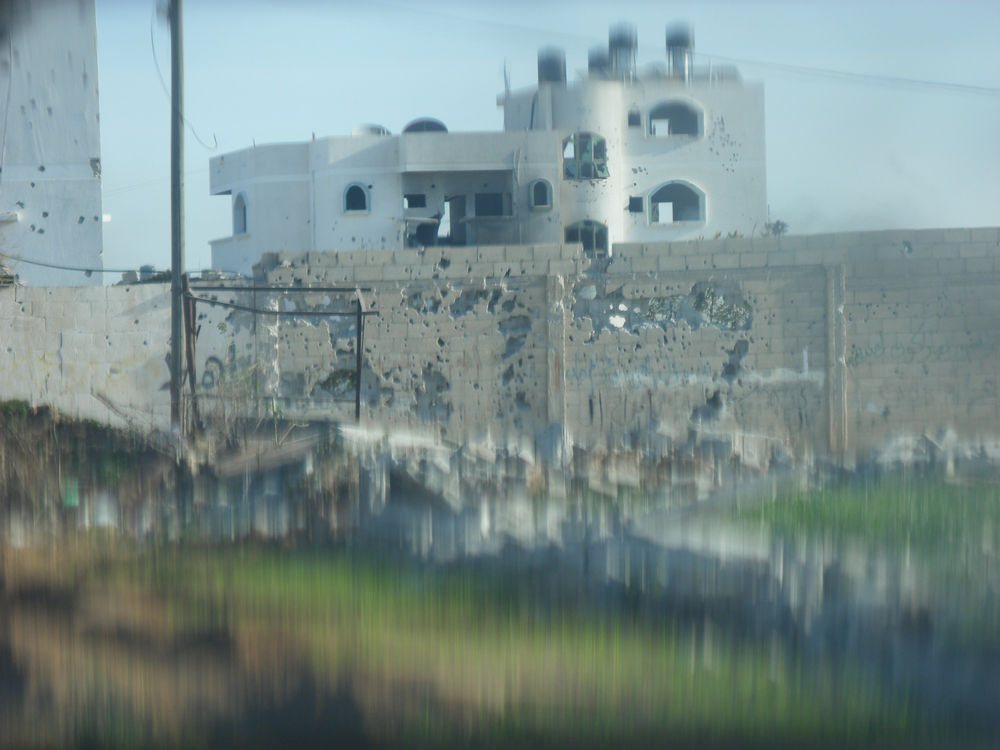
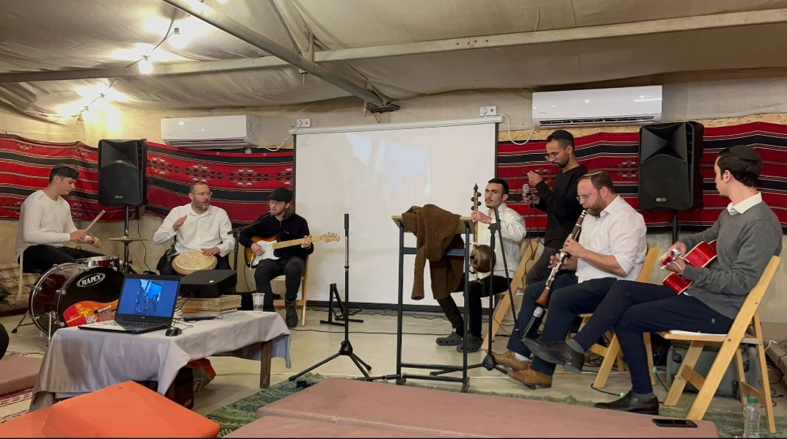
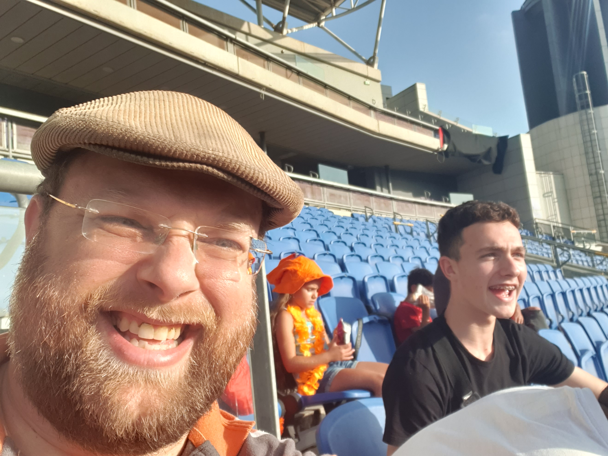

Gallery
Military Service
My military service was tank gunner "Merkava" Mark 4 throughout all 3 years of regular service and another 13 years in reserve service in the IDF. I took a significant part in a significant operational activity at great risk to myself and the forces assigned to me.
Here is a picture taken during the "Cast Lead" operation by my tank driver.
In the picture you can see the Hebrew word "blade" (Hebrew acronym for next year in Jerusalem). The word was created by me firing about 1200 mag balls. The shooting was done so that thanks to the noise of the mag bundle, the foot soldiers could reset the intentions of their personal weapons without fear of being detected by the enemy. After all, the simultaneous firing of the noise of the mag bundle swallowed the noise the shorter and weaker of their personal weapons.
Student

In the picture, me and one of my best friends, who graduated with me from the first degree at Ariel University in 2014.
Not only did we graduate together, but we also lived together for two years in the student residences at the university. Of course we created many experiences together which formed a stable and strong foundation for the good relationship between us until these days.
Music
Here in this picture, I (second from the right) play the clarinet in the high school band where I teach.
I studied clarinet for 4 years at the Petah Tikva Conservatory and performed in its representative orchestra. I have two clarinets, classic black and reddish redwood.
This band is an important part of our high school, because it is a place for the development of creativity and the expression of the inner part of the participating students as well as strengthening their self-confidence in relation to the other students and the teaching staff.
Watching Soccer Game
In May 2022, the European Under-17 Football Championship was held in Israel. Here I am at the Netanya Stadium in the final of the championship between the Netherlands and France.
Since the age of 5 I have been a fan of football in general and Dutch football in particular thanks to the total football that was invented and played in this country, which these days is called in football parlance "tiki taka" - football that is characterized by great control of the ball, passes and short movements, and the use of the ball in various channels to maintain possession of the ball that drives the opponent crazy In defense and thus on the other hand, causes him offensive restlessness and mistakes.
Unfortunately, the Netherlands lost the game 2-1, but I enjoyed watching the future generation of Dutch and world football up close.